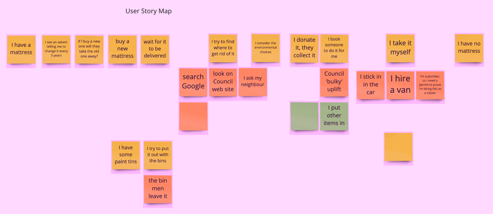

Recycling Centre/Point Data Curation
A way to share recycling data as Open Data using OpenStreetMap and Wikidata
Use Cases
As a citizen with an item to dispose of, I want to be environmentally friendly but I'm also lazy.
As a Council I can share data about locations of recycling centres and what they accept.
As a citizen, I want to know how far the nearest recycling centre is and what type of wastes it accepts.
As a citizen, I want to know how far the nearest recycling centre is and what type of wastes it accepts.
As a citizen I can improve information about my local recycling services.
As an Open Data Advocate i'd like all recycling data to be Open.

Bridge of Don OSM
Bridge of Don Wikidata
The App